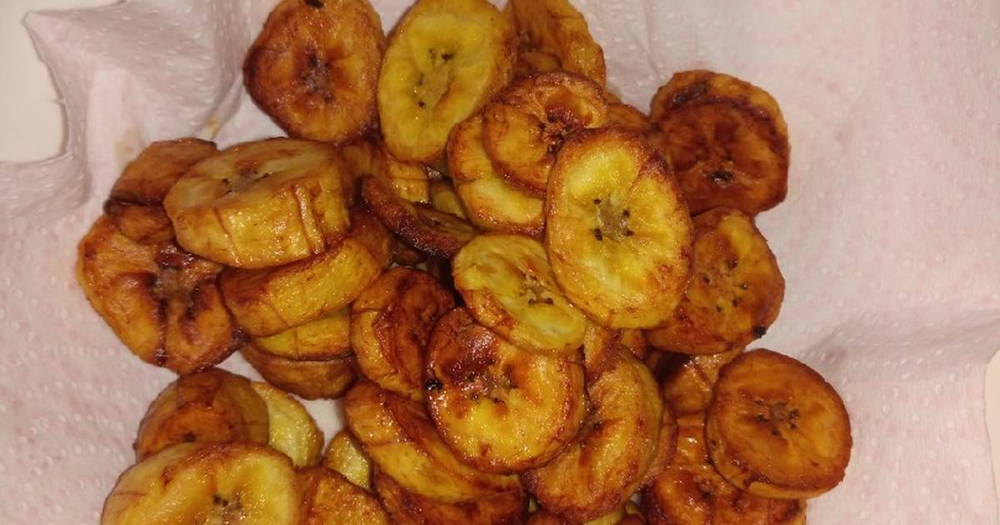

Dodo (Fried Plantain)

Dodo is a dish originated and enjoyed by west africans. It is literally fried plantain.
Dodo can be enjoyed as a snack or a meal on its own or eaten with other foods. Some of the food Dodo compliments are Beans, Garri, Rice... the list goes on and on.
Ingredients
- Plaintain
- Vegetable Oil
- Salt (optional)
Steps
- Peel the plantains and slice to desired sizes
- Spinkle a pinch of salt on the plantain pieces and toss around in a bowl (optional)
- Pour some Vegetable Oil in a frying pan and heat to about 60 degree Celcius
- Place the plantain pieces into the frying veg oil flip/toss around in the pan till they turn golden brown
- Remove the plaintain from the frying oil and serve